猫猫们（点击图片可查看大图）
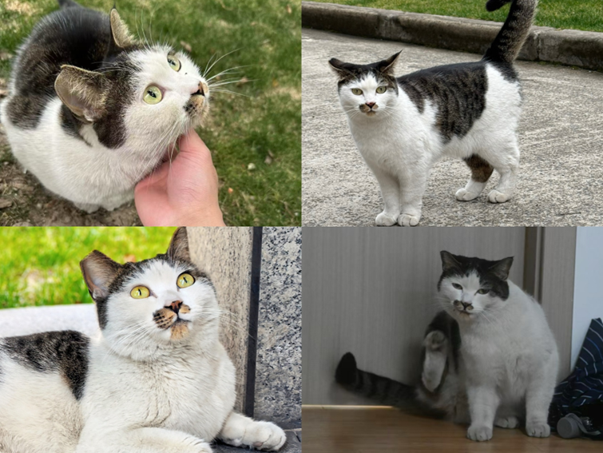
希希
别称：女明星，八嘎
性别：妹妹
年龄：约1岁
毛色：狸白
特征：衔蝉，有刘海，背部及腿部有狸花花纹
性格：机智亲人，需要独宠
绝育：已绝育
关系：敌视所有猫，但打不过
状态：流浪
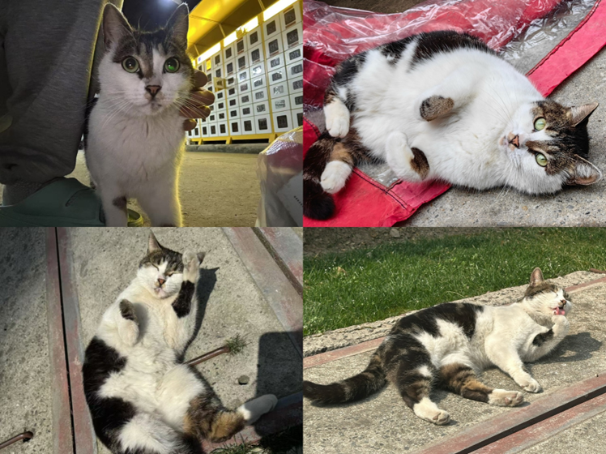
菀菀
别称：无
性别：妹妹
年龄：约1岁
毛色：狸白
特征：嘴部少许花纹，有刘海，背部、腿和脚上均有狸花花纹
性格：软糯亲人，胆子大
绝育：已绝育
关系：人类是好朋友，目前无猫关系
状态：流浪
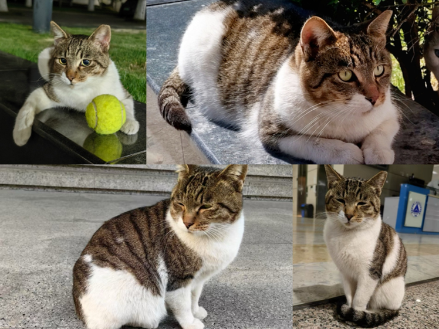
蛋大
别称：无
性别：弟弟
年龄：约1岁
毛色：狸白
特征：带有梨花面具，背部和尾巴覆盖狸花，很肥~
性格：亲人，爱管闲事
绝育：已绝育
关系：小老鼠和异瞳的大哥，疑似齐刘海的孩子，母子决裂
状态：流浪
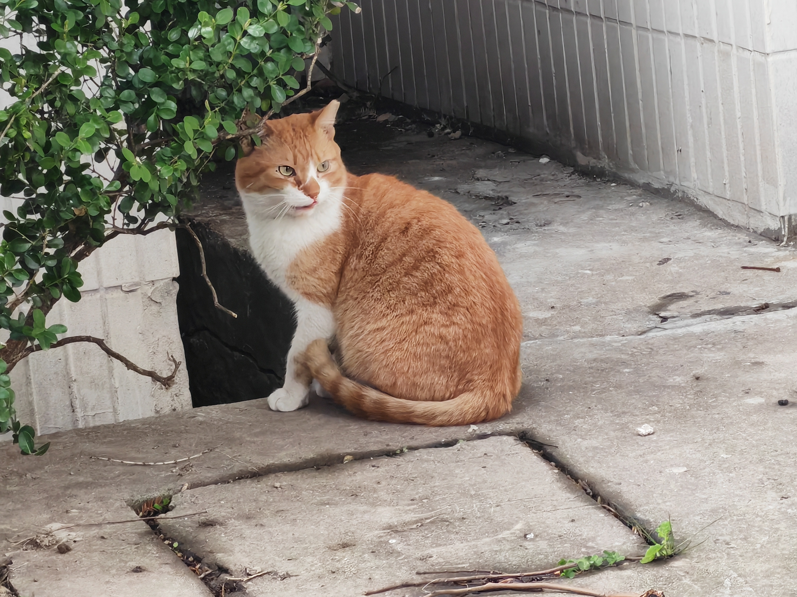
红鼻子
别称：无
性别：弟弟
年龄：2岁
毛色：橘白
特征：鼻子上一块色斑
性格：凶狠且怕人
绝育：已绝育
关系：父母姊妹兄弟不详的游侠猫，在咖啡吧小树林和两只白猫构成三口之家
状态：流浪
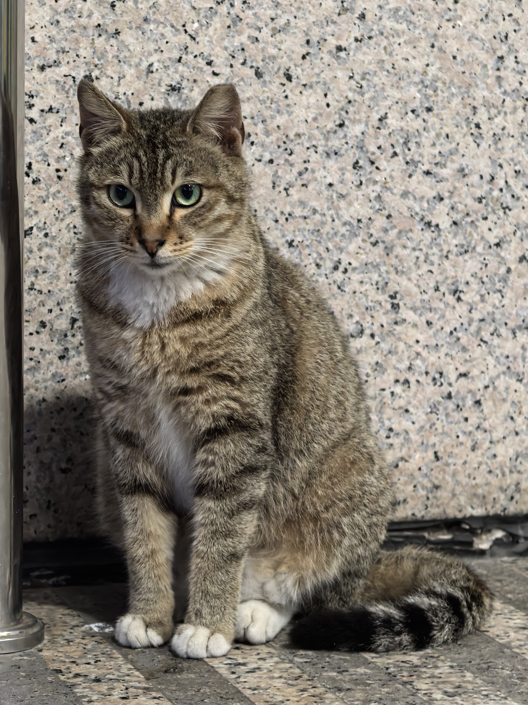
小老鼠
别称：无
性别：弟弟
年龄：1岁
毛色：狸白
特征：只有胸口和爪爪有白色
性格：胆小，怕人，但喜欢蛋大
绝育：已绝育
关系：母亲(疑似):足球猫，蛋大的小跟班
状态：流浪
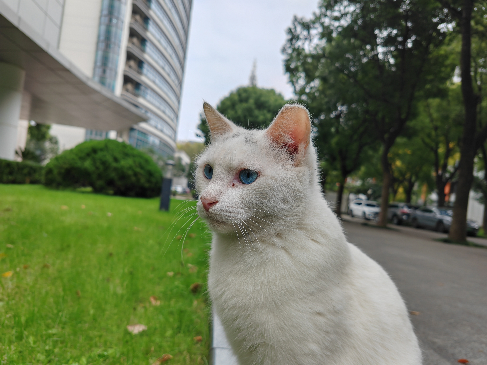
小白(总裁)
别称：总裁
性别：弟弟
年龄：未知
毛色：白猫蓝眼
特征：头上有Y字形黑色
性格：亲人，亲猫。给拾猎给抱
绝育：已绝育
关系：母亲(疑似):1号楼异瞳，蛋大的好朋友
状态：未知
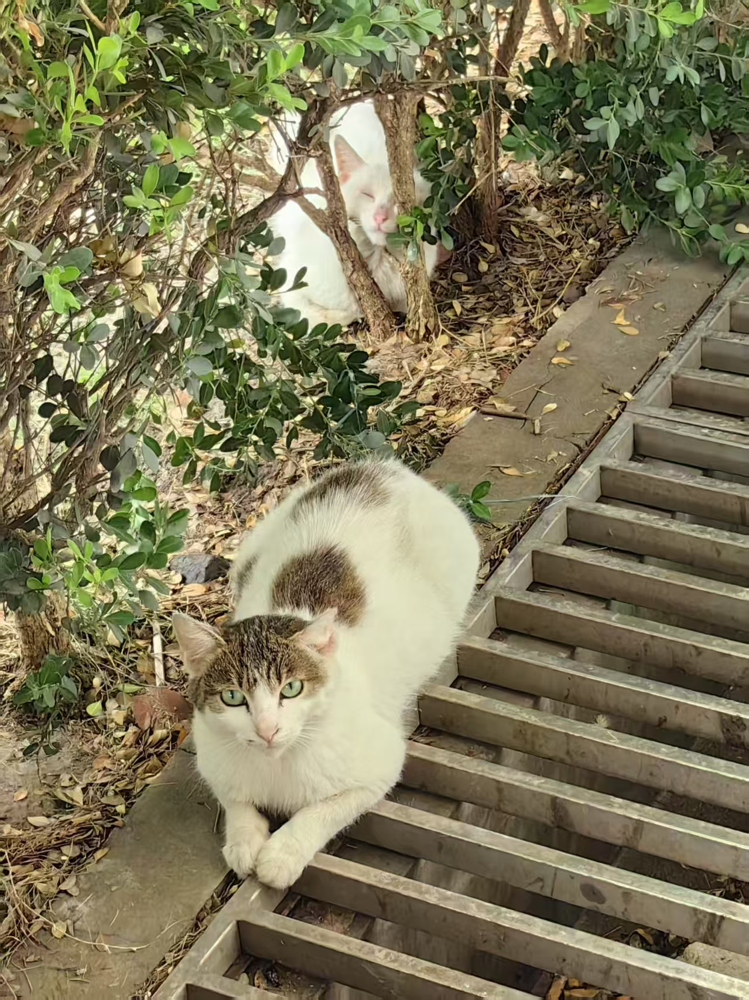
足球猫(齐刘海)
别称：齐刘海
性别：妹妹
年龄：未知
毛色：狸白
特征：头上的花纹像齐刘海一样，后背纹路像足球
性格：怕人，是独行侠
绝育：已绝育
关系：儿子(疑似):蛋大、小老鼠
状态：流浪
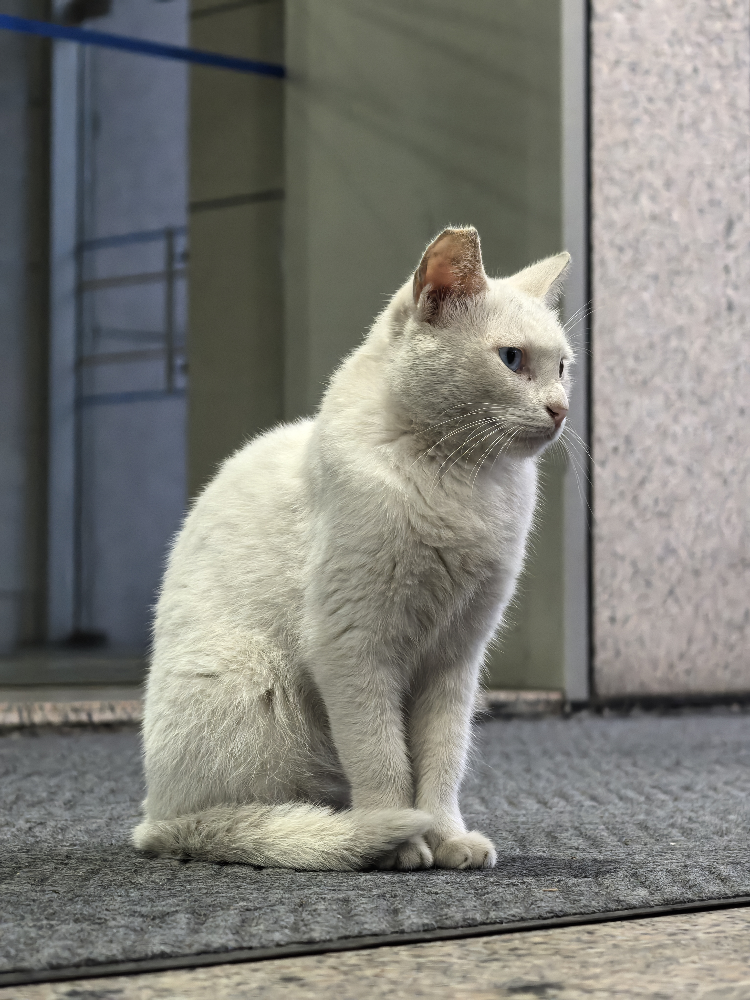
1号楼异瞳
别称：无
性别：妹妹
年龄：未知
毛色：白猫异瞳
特征：头上有点灰色
性格：怕人，绝育后成为蛋大的小跟班
绝育：已绝育
关系：儿子(疑似):小白总的妈妈，蛋大的跟班，属于1号楼帮派
状态：流浪
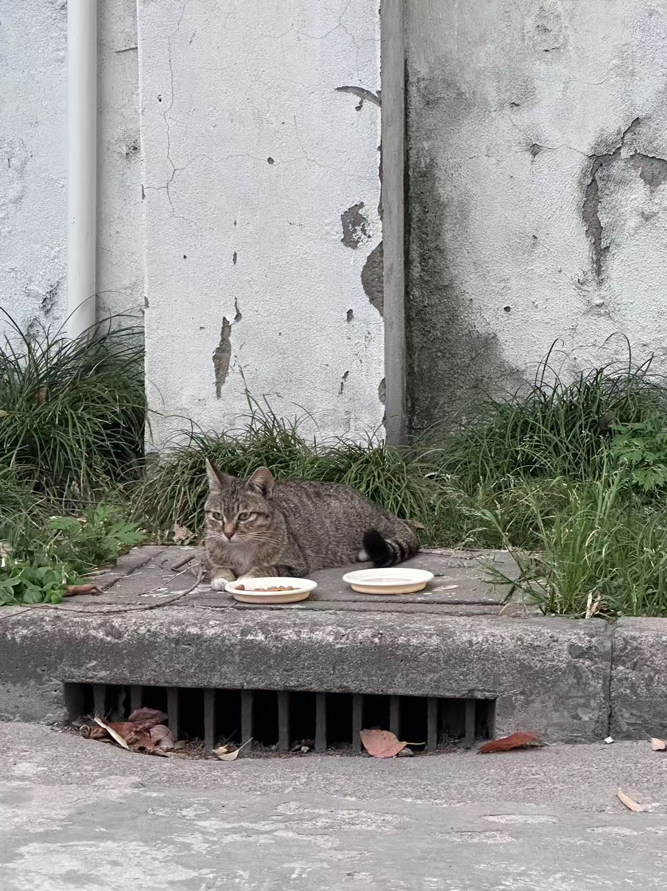
1号楼小老鼠妹妹(梨妹)
别称：梨妹
性别：妹妹
年龄：1岁
毛色：狸白
特征：胸口爪瓜是白色，长相更秀气
性格：怕人，胆小，但会对人的呼唤给一个夹子音回应
绝育：未绝育
关系：母亲(疑似):足球猫
状态：隔壁小区流浪
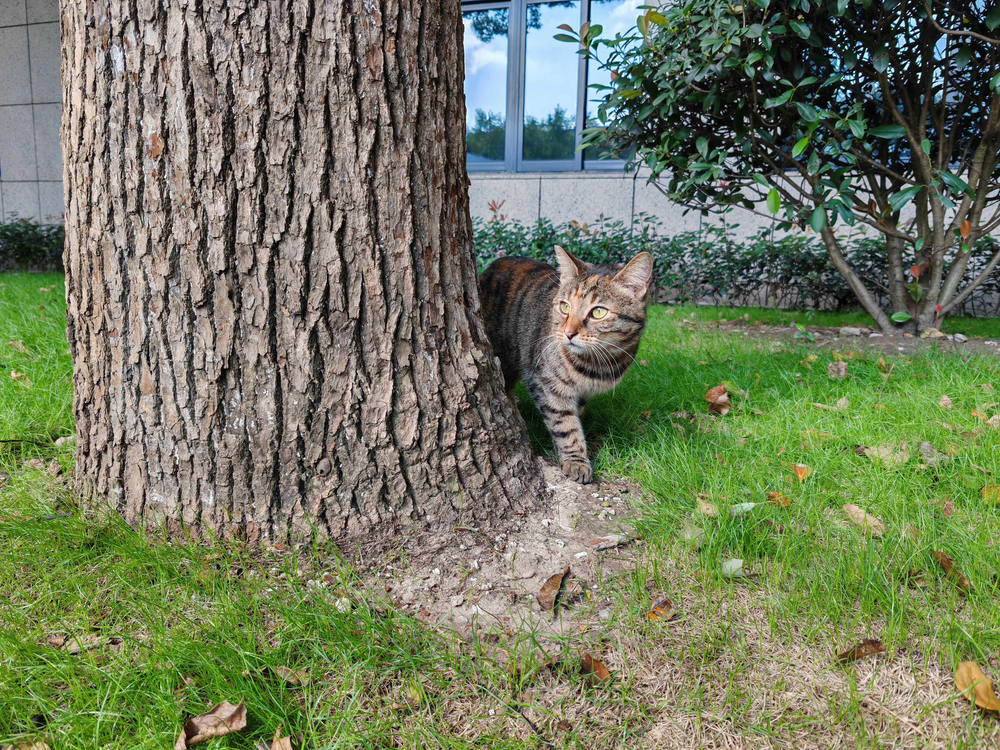
3号楼小梨花
别称：无
性别：妹妹
年龄：5岁
毛色：纯狸花
特征：有橘色基因，眼睛上面有星星柄色图案
性格：怕人、一点点风吹草动就开始跑
绝育：已绝育
关系：妈妈:曾经1号楼的胖三花，舅舅:囧八(但是狸花猫地位高于白猫)
状态：流浪
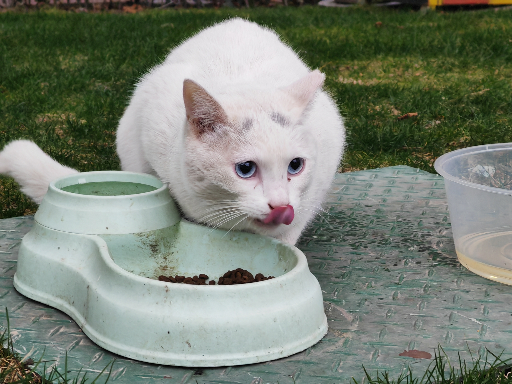
囧八
别称：无
性别：弟弟
年龄：4岁
毛色：白猫蓝眼睛
特征：头上有个八字
性格：亲人，喜欢喵喵叫，想被摸摸也会嗷喊叫
绝育：已绝育
关系：妈妈:长毛麒麟尾巴三花，侄女:小梨花
状态：流浪
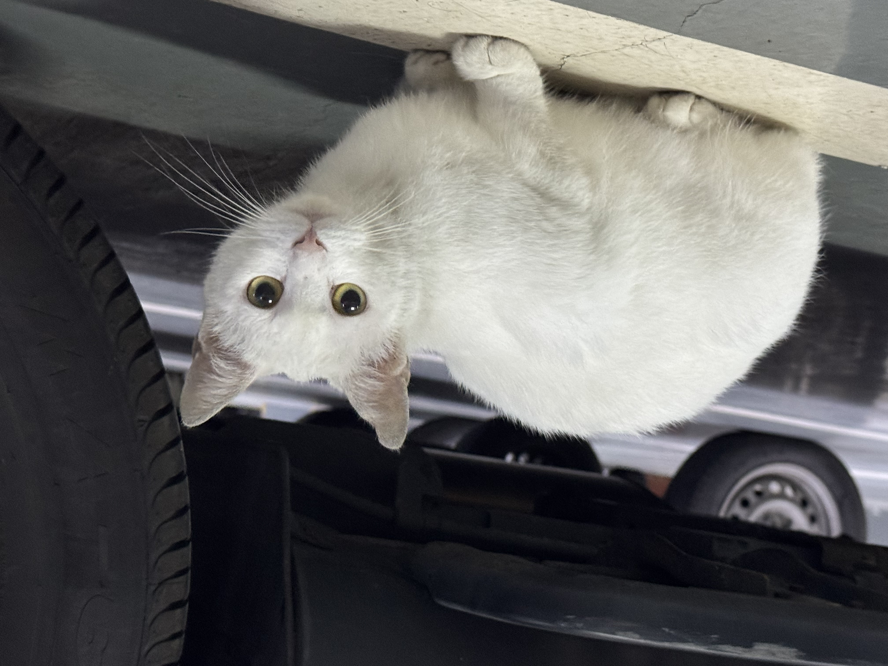
咖啡吧黄眼睛
别称：无
性别：妹妹
年龄：未知
毛色：纯色白猫
特征：眼睛像黄水晶一样
性格：喜欢喵喵叫，靠近了会哈人。怕人
绝育：已绝育
关系：母亲:咖啡吧长毛
状态：流浪

待添加
欢迎提供更多猫猫信息！
注意事项
- 请勿随意投喂人类食物，可能对猫猫健康有害。
- 观察即可，请勿强行撸猫或追逐，尊重猫猫意愿。
- 如发现受伤或状态异常的猫猫，可联系园区猫猫群。